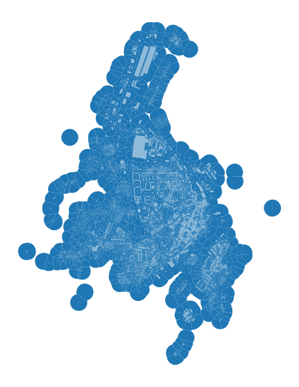
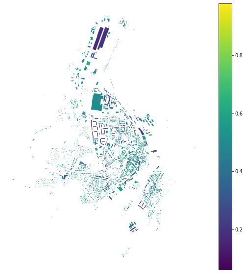
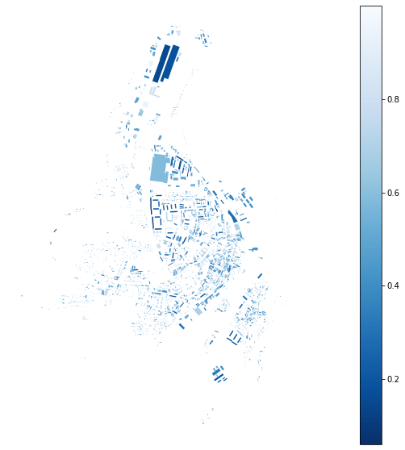
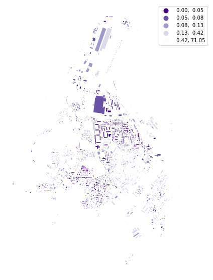
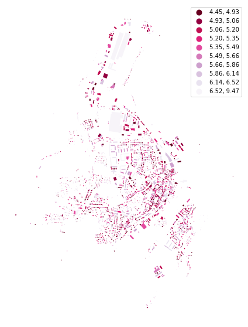
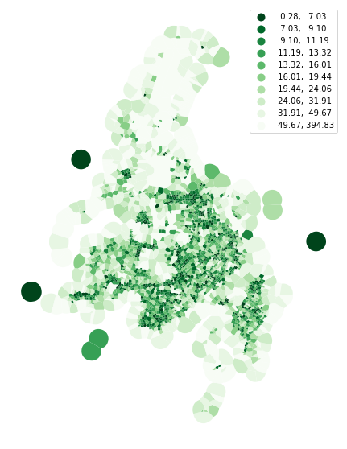
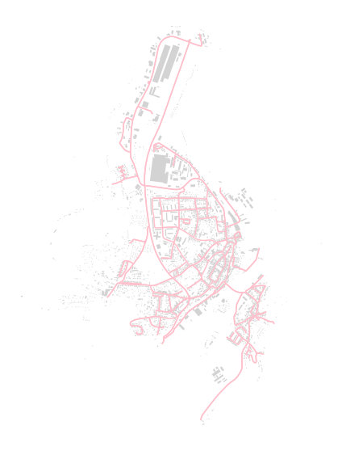
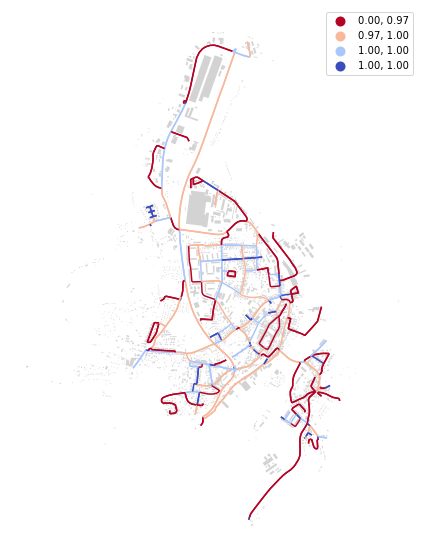

Note
Shape#
While the majority of momepy functions require the interaction of more GeoDataFrames or using spatial weights matrix, there are some which are calculated on single GeoDataFrame assessing the dimensions or shapes of features. This notebook illustrates how to measure simple shape characters.
[1]:
import momepy
import geopandas as gpd
import matplotlib.pyplot as plt
import numpy as np
We will again use osmnx to get the data for our example and after preprocessing of building layer will generate tessellation.
[2]:
import osmnx as ox
gdf = ox.geometries.geometries_from_place('Kahla, Germany', tags={'building':True})
buildings = ox.projection.project_gdf(gdf)
buildings['uID'] = momepy.unique_id(buildings)
limit = momepy.buffered_limit(buildings)
tess = momepy.Tessellation(buildings, unique_id='uID', limit=limit)
tessellation = tess.tessellation
Inward offset...
Generating input point array...
Generating Voronoi diagram...
Generating GeoDataFrame...
Dissolving Voronoi polygons...
[3]:
f, ax = plt.subplots(figsize=(10, 10))
tessellation.plot(ax=ax)
buildings.plot(ax=ax, color='white', alpha=.5)
ax.set_axis_off()
plt.show()

Building shapes#
Few examples of measuring building shapes. Circular compactness measures the ratio of object area to the area of its smallest circumsribed circle:
[4]:
blg_cc = momepy.CircularCompactness(buildings)
buildings['circular_com'] = blg_cc.series
[5]:
f, ax = plt.subplots(figsize=(10, 10))
buildings.plot(ax=ax, column='circular_com', legend=True, cmap='viridis')
ax.set_axis_off()
plt.show()

While elongation is seen as elongation of its minimum bounding rectangle:
[6]:
blg_elongation = momepy.Elongation(buildings)
buildings['elongation'] = blg_elongation.series
[7]:
f, ax = plt.subplots(figsize=(10, 10))
buildings.plot(ax=ax, column='elongation', legend=True, cmap='Blues_r')
ax.set_axis_off()
plt.show()

And squareness measures mean deviation of all corners from 90 degrees:
[8]:
blg_squareness = momepy.Squareness(buildings)
buildings['squareness'] = blg_squareness.series
100%|██████████| 2946/2946 [00:00<00:00, 9756.48it/s]
[9]:
f, ax = plt.subplots(figsize=(10, 10))
buildings.plot(ax=ax, column='squareness', legend=True, scheme='quantiles', cmap='Purples_r')
ax.set_axis_off()
plt.show()

For the form factor, we need to know the volume of each building. While we do not have building height data for Kahla, we will generate them randomly and pass a Series containing volume values to FormFactor.
Note: For the majority of parameters you can pass values as the name of the column, np.array, pd.Series or any other list-like object.
[10]:
height = np.random.randint(4, 20, size=len(buildings))
blg_volume = momepy.Volume(buildings, height)
buildings['formfactor'] = momepy.FormFactor(buildings, volumes=blg_volume.series, heights=height).series
[11]:
f, ax = plt.subplots(figsize=(10, 10))
buildings.plot(ax=ax, column='formfactor', legend=True, scheme='quantiles', k=10, cmap='PuRd_r')
ax.set_axis_off()
plt.show()

Cell shapes#
In theory, you can measure most of the 2D characters on all elements, including tessellation or blocks:
[12]:
tes_cwa = momepy.CompactnessWeightedAxis(tessellation)
tessellation['cwa'] = tes_cwa.series
[13]:
f, ax = plt.subplots(figsize=(10, 10))
tessellation.plot(ax=ax, column='cwa', legend=True, scheme='quantiles', k=10, cmap='Greens_r')
ax.set_axis_off()
plt.show()

Street network shapes#
There are some characters which requires street network as an input. We can again use osmnx to retrieve it from OSM.
[14]:
streets_graph = ox.graph_from_place('Kahla, Germany', network_type='drive')
streets_graph = ox.projection.project_graph(streets_graph)
osmnx returns networkx Graph. While momepy works with graph in some cases, for this one we need GeoDataFrame. To get it, we can use ox.graph_to_gdfs.
Note: momepy.nx_to_gdf might work as well, but OSM network needs to be complete in that case. osmnx takes care of it.
[15]:
edges = ox.graph_to_gdfs(streets_graph, nodes=False, edges=True,
node_geometry=False, fill_edge_geometry=True)
[16]:
f, ax = plt.subplots(figsize=(10, 10))
edges.plot(ax=ax, color='pink')
buildings.plot(ax=ax, color='lightgrey')
ax.set_axis_off()
plt.show()

Now we can calculate linearity of each segment:
[17]:
edg_lin = momepy.Linearity(edges)
edges['linearity'] = edg_lin.series
[18]:
f, ax = plt.subplots(figsize=(10, 10))
edges.plot(ax=ax, column='linearity', legend=True, cmap='coolwarm_r', scheme='quantiles', k=4)
buildings.plot(ax=ax, color='lightgrey')
ax.set_axis_off()
plt.show()
